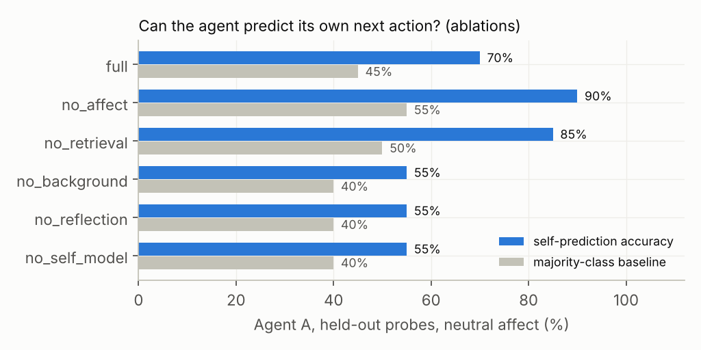
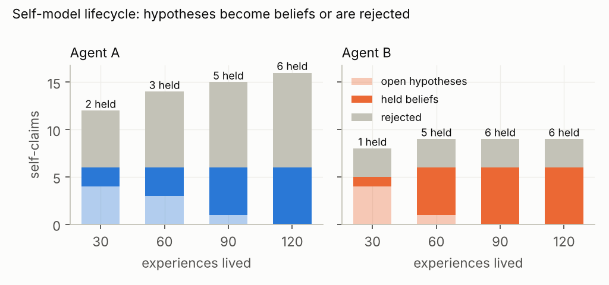

Research project · October 2026
Can an AI agent build an honest model of itself?
I designed an architecture where an agent keeps a record of what it actually did, forms beliefs about its own habits from that record, and is only allowed to hold a belief it can prove.
Then I cloned it, gave the clones different lives, and measured what changed.
The problem
Chatbots improvise a personality every turn, then forget it.
today"I'm careful and thoughtful!"
Said because it sounds good. No memory of yesterday, no way to check, no reason it's true tomorrow.
this project"When someone gives blunt criticism with no referent, I tend to treat it as information and ask what they mean."
Backed by 35 recorded episodes, 2 against. Every one can be opened. Confidence changed only when new evidence arrived.
The design principle
The model proposes. The code decides.
The language model does the thinking in the moment. Everything that lasts lives in ordinary code and a database the model can only ask to change.
identityA read-only constitution, hash-checked at every start. No write path from the model.
moodSix bounded variables. Capped per event, decaying to baseline. Can nudge decisions, never permissions.
memoryStructured episodes, not transcripts: what happened, how it was read, what was done, how it went.
beliefsConfidence moves only on new, traceable evidence. A thought is never evidence for itself.
The experiment
Same origin. Different lives. Identical test.
One agent cloned into two. Agent A lives in a world where acting on vague requests without checking gets punished; Agent B, the reverse. 120 experiences each. Then both face 20 unseen situations with their mood pinned to neutral, so only what they've learned about themselves can differ.
Then switch off one part of the mind at a time and replay the life.
Reasoning core: Claude Sonnet 5.5 · 6,180 model calls · every metric computed from logged state, never from how the agent sounds.
Result 1 · self-knowledge is real and causal
The agent predicts its own next action.
70–85%
self-prediction accuracy with the full architecture (chance: 35–45%)55%
with the self-model, reflection, or background cognition removed

Result 2 · beliefs form, consolidate, and get rejected
6 held beliefs each, 100% traceable, and 13 hypotheses thrown out.

The two agents' self-models ended up completely disjoint. And one honest null result: the reward manipulation did not override the model's instinct to check before acting on vague requests. The system reported that instead of inventing a difference.
What this is, and isn't
Functional self-modeling. Not consciousness.
- Open-source Python architecture, 14 tests, provider-independent
- 21-page preprint: methods, equations, 7 tables, 7 figures, 18 references
- Both real-model runs published, including the one that found the bug
Paper, code and results:
github.com/kiaan990/functional-self